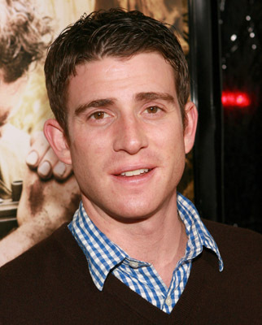
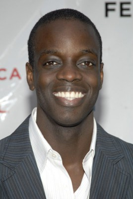
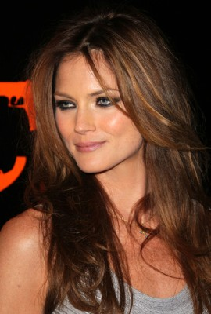
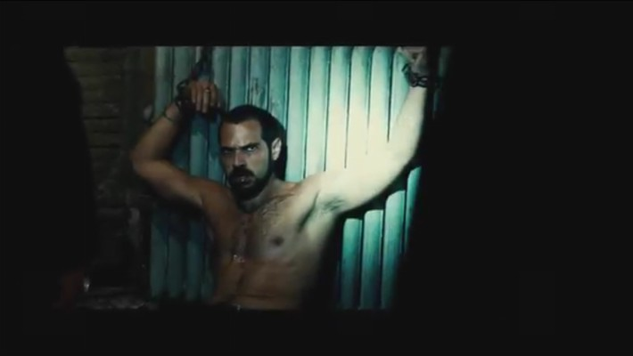
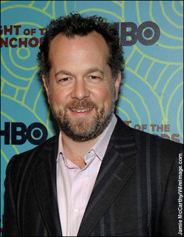
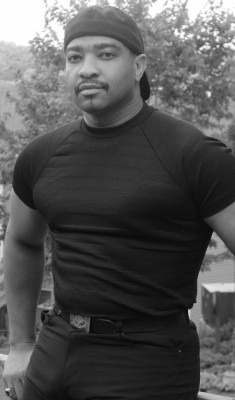

#2593 Couchgeflüster
Alternativ: Prime

 IMDB-Wertung: 6.2 / 10
IMDB-Wertung: 6.2 / 10  Metascore: 58
Metascore: 58 
Nach einer gescheiterten Ehe findet die 37-jährige Karrierefrau Rafi in dem Künstler David die Liebe ihres Lebens. Zu dumm, dass der Auserwählte erst 23 ist, in Rafis Augen noch ein Kind. Doch wenn die Hormone verrückt spielen, kann man sich nicht dagegen wehren. Geplagt von Schuldgefühlen beichtet Rafi ihre sexuellen Eskapaden ihrer Therapeutin Lisa. Die gerade mächtig sauer ist, da ihr Sohn eine Romanze mit einer Nicht-Jüdin eingegangen ist. Was Lisa da noch nicht ahnt - die neue Flamme ihres Sohnemanns ist ihre Patientin.
Jahr: 2005
Dauer: 105 Minuten
FSK: 0
Land: USA Studio: Universal PicturesTonspuren:
Untertitel: Deutsch,
Auflösung: 720p (1280x720) Größe: 4474 MB
Genre: Drama, Komödie, Liebe
Regisseur: Ben Younger
Drehbuch: Ben Younger
Soundtrack: Ryan Shore
Darsteller:
 Uma Thurman als Rafi Gardet
Uma Thurman als Rafi Gardet Meryl Streep als Lisa Metzger
Meryl Streep als Lisa Metzger-  Bryan Greenberg als David Bloomberg
- Jon Abrahams als Morris
 Zak Orth als Randall
Zak Orth als Randall- Annie Parisse als Katherine
- Aubrey Dollar als Michelle
 Jerry Adler als Sam
Jerry Adler als Sam-  Ato Essandoh als Damien
- David Anzuelo als Bodega Counterman
- Naomi Aborn als Dinah Bloomberg
 John Rothman als Jack Bloomberg
John Rothman als Jack Bloomberg- Jonathan Roumie als Bakery Counterman
- Madhur Jaffrey als Rita
- Jason McDonald als Photographer / Basketball Player
-  Mini Anden als Sue
- Stretch Armstrong als House Party DJ
- Susie Kantar als Carla
-  Sebastian Sozzi als Friend #1
- Jade Yorker als Friend #2
-  David Costabile als Jason
 Will McCormack als Palmer
Will McCormack als Palmer- Alex Webb als Art Collector
- Seth Herzog als Rafi's Friend
- Beth Skipp als Salesperson
- Jennifer Marlowe als Il Buco Bartender
- Anya Avaeva als VIP Guest , uncredited
- Vinny DeGennaro als Street Thug , uncredited
-  Dennis Jay Funny als Tower Records Window Shopper , uncredited
- Maria Gundy als Girlfriend in a Club , uncredited
- Shevy Gutierrez als Event Server , uncredited
- Rick Kain als Yuppy Dad , uncredited
- Michalina Scorzelli als Dinner Guest , uncredited
- Adriana Biasi als Bay Ridge Blonde
- David Younger als Brother #1
- Palmer Brown als Brother #2
- Doris Belack als Blanche
- Tadhg O'Mordha als Bakery Counterman #2
- Gil Deeble als Security Guard
- Mitchell Green als Bouncer
- Lotte Mandel als Bubi
- Eboni Cooper als Radjina
- Mick de Lint als Fashion Shoot Client
- Tina Farris als Rafi's Assistant
- Anne Joyce als Young Mother
- Christopher Innvar als Rafi's Date
- Jerry Baxtron Jr. als Bartender , uncredited
- James Coyle als Security Guard , uncredited
- Ernest Dancy als Basketball Player , uncredited
- Caroline de Fauw als Stylist , uncredited
Datei: X:\2005(A-F)\Couchgeflüster (2005, FSK0, 1280x720).mkv seit 25.11.2015
Festplatte: HD 2003-2004-2005(A-F)
 Es gibt insgesamt 49 Filme in der Gruppe '2005(A-F)'
Es gibt insgesamt 49 Filme in der Gruppe '2005(A-F)'